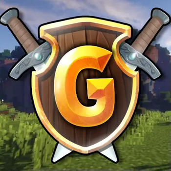

Who I Am
Hey, my name is Willi, also known on the internet as nevermiind. I'm a 20-year-old student from Germany. After finishing my Abitur in 2023, I spent a year preparing for university and gaining work experience. After that, I began studying Psychology at the University of St Andrews in Scotland, where I discovered my passion for all things Psychology and Neuroscience. I'm now continuing my academic journey near Berlin, returning to my roots in Germany.
What I Do
I’m currently diving deep into neuroscience, psychology, and programming. I'm also a passionate gamer and hobby developer. As a member of the moderation team at GommeHD.net, I enjoy being part of an active gaming community.
What I’m Building
My goal is to build bots and automations that simplify everyday life. Whether it’s for managing tasks or adding fun to a game, I love creating tools that bring real value and enjoyment. Programming is more than a skill for me—it’s a growing passion.